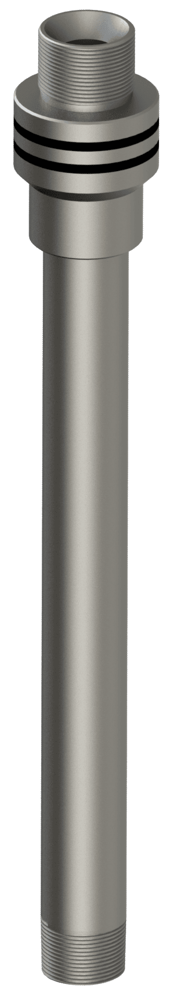

Filter running adapter

The filter running adapter is designed for running liner filters when the standard wiper plug is not required. The adapter is installed in place of the wiper plug and provides a connection for the inner string, allowing circulation and wellbore cleaning through the liner shoe during filter deployment.
- Category
- Liner hangers
Part of solutions
PL-LH/HSGLTPIS/PBRHydraulic single-grip liner hanger with liner top packer, inner string & polished bore receptacleIncluded

PL-LH/HDGDRLTPHydraulic dual-grip dual-row liner hanger with liner top packerAlternative

Can be combined with


Show all (18)Show fewer


Request Filter running adapter
Tell us the casing, the depth and the conditions, and we will come back with a selection.
Contact us